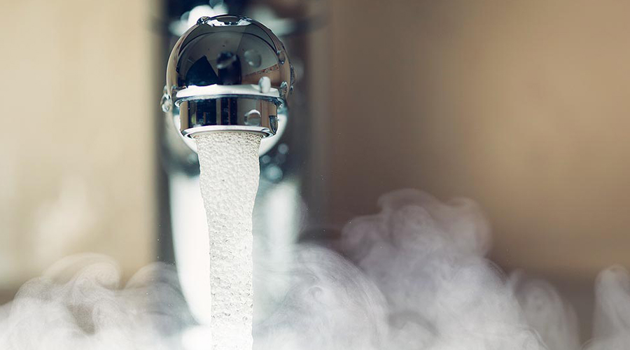

Як заожаджувати воду
Навіщо економити воду?
Людям здається, що запаси води нескінченні, але це не так. Озера і річки дрібнішають, а деякі водойми забруднені настільки, що в них забороняють купатися. Чим більше ми забруднюємо воду, тим менш якісною отримуємо її назад, оскільки очисні споруди міст не можуть впоратися зі зростанням обсягу споживання. Кожному з нас необхідно контролювати витрату води не тільки з міркувань економії коштів, але і для заощадження природи. Зробити це можна слідуючи простим порадам.
- Вимикайте кран, коли вода не потрібна
- Замочуємо овочі і брудний посуд
- Душ замість ванни
- Повністю завантажувати пральну і посудомийну машини
- Не розморожуємо продукти водою
- Рoзподіляємо відходи
- Поливаємо рослини дощовою водою
Багато хто навіть не замислюються, скільки води просто так витікає в каналізацію при відкритому крані. Деяких плескіт води під час чищення зубів, душа і миття рук заспокоює, тому вони не поспішають припиняти потік. В середньому, при нормальному тиску води, стандартний кран діаметром 15 мм, відкритий на повну, випускає 0,2 літра в секунду, тобто 12 літрів в хвилину. Всього за 5 хвилин, які ми зазвичай витрачаємо на умивання, витікає 60 літрів. Виходить, що за місяць тільки при чищенні зубів ми бездумно витрачаємо 1830 літрів. З урахуванням незакритого крана під час душу та миття посуду цифра виростає до непристойного значення.
На відмивання засохлої гречки від тарілки або грудок землі від картоплі йде чимало часу і води. Тому для економії миючого засобу, води і вашого часу замочуйте овочі та посуд на 10-15 хвилин в тазику або у заткнутій раковині.
Місткість ванни варіюється від 140 до 250 літрів. Приймаючи ванну кожен день, ви витрачаєте близько 1400 літрів на тиждень тільки на власне миття. Звичайно, повністю відмовлятися від ванни не потрібно, адже вона допомагає розслабитися і зняти стрес. Головне, не забувати вимикати воду в душі, коли вона не потрібна!
Повне завантаження по інструкції дозволяє значно економити воду і електроенергію. За один цикл повністю завантажена посудомийна машина витрачає від 10 до 20 літрів, пральна - від 40 до 80 літрів. Споживання електроенергії в обох випадках буде в районі 1 кіловат-години.
Не слід розморожувати під струменем води, особливо гарячої, краще залишити продукти в холодильнику або на столі. Таке розморожування займає більше часу, але зате економить воду. Разом з тим неправильний підхід до розморожування продуктів може привести до втрати вітамінів і корисних речовин. Якщо заморозка повинна бути швидкою, розморожування - повільним.
Вторинна переробка вторсировини дозволяє істотно скоротити витрату ресурсів. Наприклад, переробка однієї тонни паперу призводить до економії 4100 кіловат-годин 26 500 літрів води, 1430 літрів нафти, 2,5 кубометра землі на звалищі і запобігання викиду в повітря 27 кілограмів забруднюючих речовин.
Якщо ви живете в приватному будинку, встановіть у дворі бочку для збору дощової води. Це рішення може заощадити до 5000 літрів в рік. Зібрана дощова вода відмінно підходить для поливу рослин. Крім того, таку воду можна так само використовувати для прибирання в гаражі і обслуговування садової техніки.